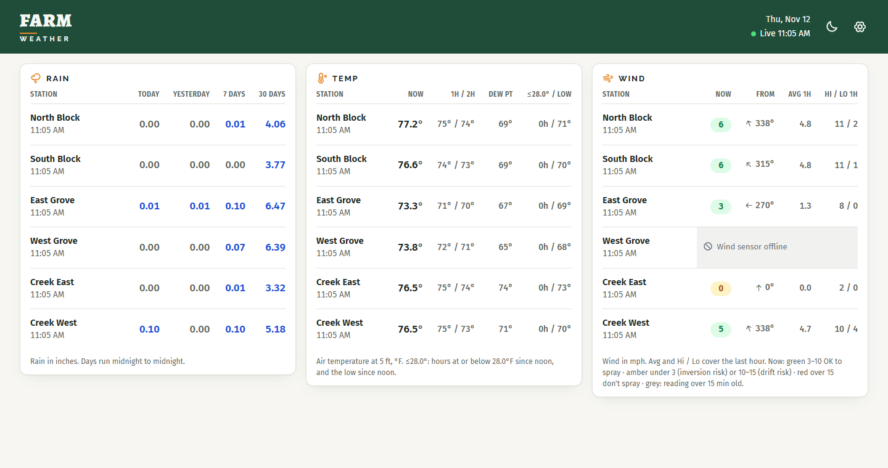
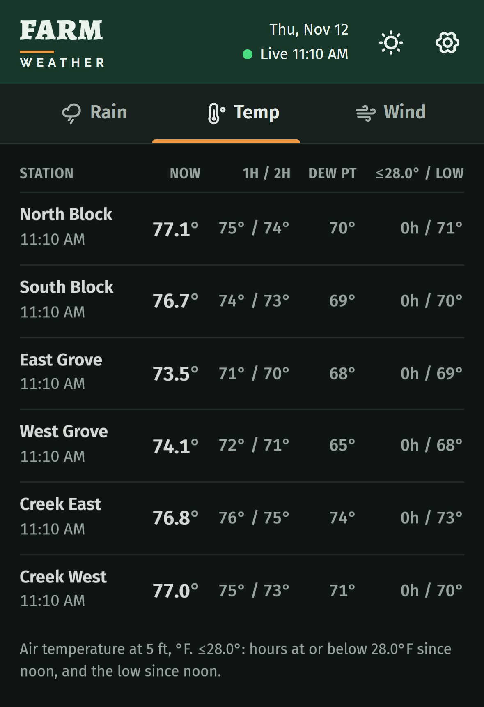

Six field weather stations, one glanceable screen. Built for a Florida agricultural client who makes spray and freeze decisions from a truck cab, on a phone, in direct sun. An Azure Function pulls every station into Azure SQL every 5 minutes, and a mobile-first React app shows rain, freeze and spray-wind guidance that updates itself.

6 weather stations, 42 fields per reading, ingested every 5 min.
~1.5 min from a new reading landing to it showing on screen, with no page reload.
0 stored passwords: managed identity, Key Vault references and OIDC deploys.
~$25–30/mo to run, with no servers to maintain.
The client runs six Davis WeatherLink Pro stations across their groves. Spraying and frost protection come down to a few numbers: wind speed and direction (drift and inversion risk), hours below a freeze threshold, and rain totals. The WeatherLink app shows one station at a time and is built for hobbyists. They wanted all six side by side on a phone, readable outdoors, and current without a manual refresh.
The metrics were theirs: rain (today, yesterday, 7 and 30 days), temperature (now, 1h and 2h ago, dew point, low, freeze hours since noon) and wind (now, direction, 1h average, high/low).
Two paths, kept apart on purpose. The write path is a timer function that pulls WeatherLink into SQL every 5 minutes; no user ever triggers it. The read path is one HTTP endpoint that runs one SQL query and returns a row per station with every number already calculated. The browser never touches the database, and the Function App only answers requests that come through the Static Web App. Direct calls get a 401.
The timer fires 1 minute after each 5-minute reading closes, so the record has landed at WeatherLink. Each station resumes from its own watermark, so a run that's down for hours heals on the next one. After a 6-hour gap, the first run loaded 70 readings per station; every run since has added 1. One bad station doesn't stop the rest.
app.timer('ingest', { schedule: '0 1-59/5 * * * *', handler: async (_timer, ctx) => { const end = Math.floor(Date.now() / 1000); const stations = await stationWatermarks(); const results = await Promise.allSettled(stations.map((s) => syncStation(s.station_id, syncStart(s.last_ts, end), end))); if (results.every((r) => r.status === 'rejected')) throw new Error('All stations failed'); }, });
Each fetch re-reads 10 minutes before the watermark so late records are never missed, and catch-up is capped at 7 days per run. WeatherLink's /historic endpoint only accepts 24-hour ranges, so longer gaps are split into windows.
export const OVERLAP = 600; // re-read 10 min; duplicates are ignored by the PK export const MAX_CATCHUP = 7 * DAY; export const syncStart = (lastTs: number | null, now: number): number => Math.max(now - MAX_CATCHUP, (lastTs ?? 0) - OVERLAP); // Split [start, end) into the ≤24h windows /historic accepts. export const windows = (start: number, end: number): [number, number][] => { const out: [number, number][] = []; for (let s = start; s < end; s += DAY) out.push([s, Math.min(s + DAY, end)]); return out; };
Network errors, 429s and 5xx responses retry with exponential backoff (1s, 2s, 4s). A bad key fails at once, and error messages never include the request URL, because it carries the API key.
The function hands the raw WeatherLink JSON to a stored procedure, which shreds it with OPENJSON in a single INSERT: either the whole window is stored or none of it. Overlapping re-reads are safe because the primary key silently drops duplicates, so re-running anything is always a no-op.
-- Re-loading existing rows (overlap, retries, concurrent runs) is a silent no-op. CONSTRAINT pk_station_obs PRIMARY KEY (station_id, ts) WITH (IGNORE_DUP_KEY = ON) CREATE OR ALTER PROCEDURE dbo.ingest_historic @station_id INT, @payload NVARCHAR(MAX) AS INSERT dbo.station_obs (station_id, ts, temp_out, wind_speed_avg, rainfall_in, /* +39 */ raw) SELECT @station_id, DATEADD(SECOND, r.ts, '1970-01-01'), r.temp_out, /* … */ d.value FROM OPENJSON(@payload, '$.sensors') s CROSS APPLY OPENJSON(s.value, '$.data') d CROSS APPLY OPENJSON(d.value) WITH (ts INT, temp_out REAL, /* … */) r WHERE JSON_PATH_EXISTS(d.value, '$.temp_out') = 1;
The only endpoint is GET /api/dashboard?freeze=28. It validates the threshold and calls a table-valued function that does every calculation. Rain windows are local calendar days using AT TIME ZONE per station, so midnight is midnight in Florida, not UTC. Freeze hours count from the most recent local noon against a threshold each user picks.
app.http('dashboard', { methods: ['GET'], authLevel: 'anonymous', // read-only; reachable only through the linked Static Web App handler: async (req) => { const freeze = Number(req.query.get('freeze') ?? 28); if (!Number.isFinite(freeze) || freeze < 0 || freeze > 50) return { status: 400, jsonBody: { error: 'freeze must be a number between 0 and 50' } }; const r = await (await db()).request().input('f', sql.Real, freeze) .query('SELECT * FROM dbo.fn_dashboard(@f) ORDER BY sort_order'); return { jsonBody: r.recordset }; }, });
React 19, Vite and strict TypeScript, with one CSS file and self-hosted fonts. On a phone it's three tabs (Rain, Temp, Wind) under a sticky tab bar; at 1440px and up the tabs disappear and all three panels sit side by side.

Updates timed to the data. The page fetches 2.5 minutes past each 5-minute mark, about 90 seconds after ingest runs, and again whenever the phone or tab becomes visible. SignalR push was considered and rejected: the data only changes every 5 minutes, so push would add an Azure resource without making anything fresher.
// Ingest runs at :01, :06, :11… — fetch 90s after each run lands. const SYNC_MS = 5 * 60_000; const SYNC_OFFSET_MS = 150_000; // 2.5 min past each 5-min mark export const msToNextSync = (now: number) => SYNC_MS - ((now - SYNC_OFFSET_MS) % SYNC_MS); // Spray guidance from current wind (mph). Thresholds live here only. export const spray = (mph: number): Spray => mph < 3 ? { level: 'caution', label: 'Calm: inversion risk' } : mph <= 10 ? { level: 'ok', label: 'OK to spray' } : mph <= 15 ? { level: 'caution', label: 'Gusty: drift risk' } : { level: 'bad', label: "Don't spray" };
Built for the field. At least 12px header text, tabular figures, high contrast, and a dark mode that follows the device with no white flash on load. It respects the iPhone notch and home bar (viewport-fit=cover with env(safe-area-inset-*)), keeps 16pt side margins to clear case lips, and ships a manifest for Add to Home Screen. ARIA tabs support arrow-key and Home/End navigation, spray chips have screen-reader labels, tap targets are 44px, and reduced motion is respected. The display logic (formatting, spray thresholds, freeze counting, the refresh scheduler) is pure functions with node --test unit tests.
No stored secrets. SQL accepts only Entra sign-ins, and the Function connects as its managed identity. The WeatherLink credentials live in Key Vault and app settings reference them. GitHub deploys to Azure through OIDC workload identity federation, so there's no publish profile or client secret to leak.
Least privilege. The deploy identity has Website Contributor on one Function App, and only the main branch of one repo can use it. Its federated subject uses GitHub's immutable-ID format, so a deleted and recreated repo with the same name can't take it over.
Supply chain. Every GitHub Action is pinned to a full commit SHA, and Dependabot moves the pins monthly. Installs run npm ci --ignore-scripts. The build job has no secrets; only the built files reach the deploy job.
One repo (web/, api/, sql/) with two path-filtered workflows, so a CSS change doesn't redeploy the API. The web workflow builds, tests and deploys to the Static Web App, and every pull request gets its own preview URL that the client can try on their phone before it goes live. The API workflow builds, tests, prunes dev dependencies and deploys via OIDC.
The domain is registered at Cloudflare (at cost) after Azure refused the purchase for the subscription type. The root is served through a flattened CNAME, with Cloudflare's proxy off so Azure can verify the domain and issue its free managed TLS certificate.
| Decision | Chosen | Rejected | Why |
|---|---|---|---|
| Live updates | Polling timed to ingest | SignalR push; 60s polling | Data changes every 5 min; push adds cost for no freshness |
| Access | Public, read-only | Invite-only login | 25-user invite cap, login friction in the field, low-sensitivity data |
| Compute | Separate Function App | SWA managed functions | Managed functions are HTTP-only; ingest needs a timer |
| DB tier | SQL S0 | Serverless | 5-min writes mean serverless never auto-pauses, so it costs more |
| Repo layout | One repo, two workflows | Repo per service | Features cross web, api and sql; one PR each |
| Domain | Cloudflare | Azure App Service Domain | Azure refused the purchase; Cloudflare sells at cost |
Cross-platform lockfile bug. npm 11.6.2 on Windows quietly dropped Linux-only optional dependencies from package-lock.json, so npm ci failed on GitHub's Linux runners. I reproduced it by running Linux Node in WSL against both lockfiles, confirmed npm 11.19.1 keeps the entries, and kept a strict npm ci with a correct lockfile instead of loosening CI.
Azure CLI bug. az staticwebapp backends link returned a bogus "Not Found". The underlying REST PUT …/linkedBackends call worked, so I linked the backend that way and confirmed it by calling the Function directly and getting a 401.
OIDC subject mismatch. GitHub now issues tokens with immutable IDs in the subject claim. I rewrote the federated credential to match, which is also the safer form.
A bug report that was a screenshot. The client reported the header clipped by the Dynamic Island. Their photo was a full-screen screenshot of an old build viewed in the Photos app, not the live site. The real needs behind it still got fixed: home-screen safe areas, white status-bar text on the header, and wider phone margins.
| Item | ≈ / month |
|---|---|
| Azure SQL S0 | ~$15 |
| Static Web App Standard (needed for a linked backend) | ~$9 |
| Function App, Flex Consumption (~8.6k timer runs + page loads) | ~$0–2 |
| Key Vault, Application Insights | <$1 |
| Domain | ~$1 |
| Total | ≈ $25–30 |